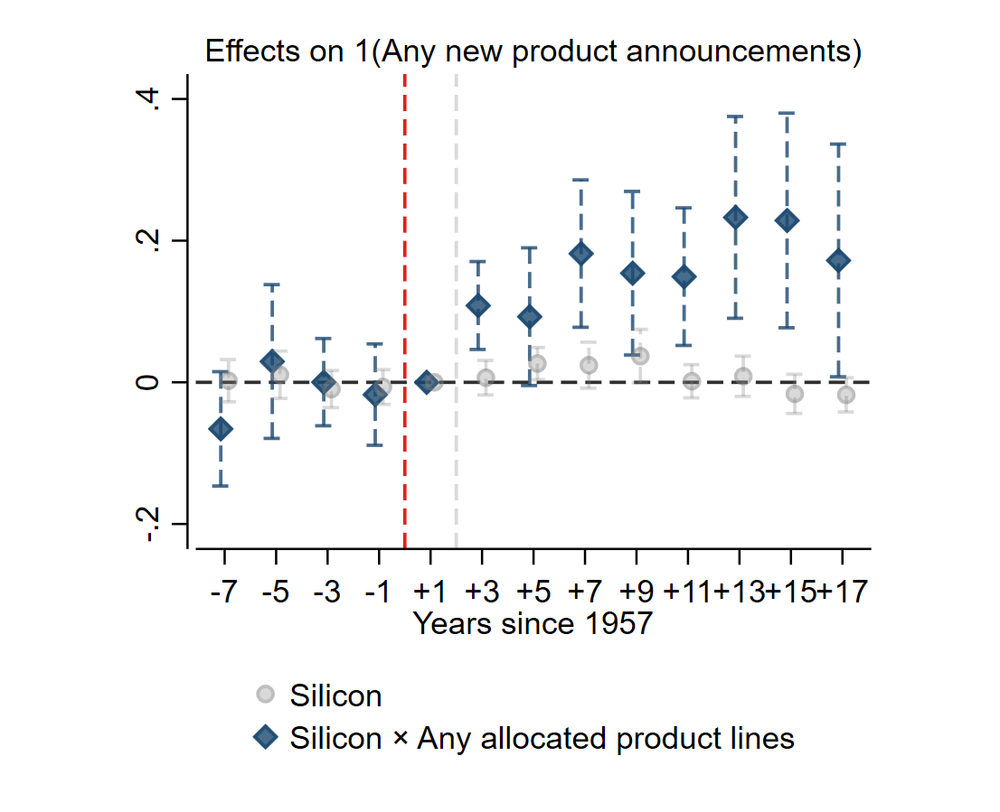
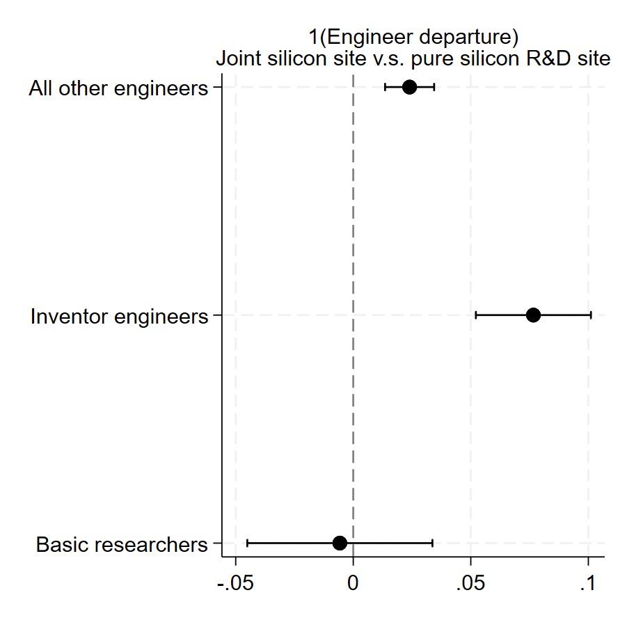

About me
I am a new post-doc research fellow (2026 - present) in innovation strategy at Duke University, Fuqua School of Business. I graduated as a PhD in Economic Geography, London School of Economics (2021-2025). I work on how firms create and capture value from revolutionary technological changes, as well as the origin of high-tech clusters and new industries.
Please drop me a message any time at jingyuan.zeng@duke.edu
Some of my latest research includes:
The strategic costs of coordination: Evidence from the American silicon breakthrough
Click here for the abstract
One of the largest technological opportunities of the past century was the emergence of the planar process for the manufacture of silicon-based semiconductors. In this paper, I use this setting to examine a fundamental tension in strategy between (i) the efficient spatial organization of R&D and production, and (ii) firms' ability to appropriate value from their investments in innovation. Using a new digitized and geocoded dataset on semiconductor firms' patents, products, production capacity, and engineering workforce at the firm-laboratory level, I show that firms agglomerated product development and production in their most silicon-compatible R&D sites to exploit the planar process. Joint R&D-production sites were 16.8 percentage points more likely to announce new products after the planar breakthrough. However, engineers at these sites were exposed to the complete R&D value chain, and were subsequently more likely to be either promoted or poached by similar firms, which subsequently patented on the same technology developed by these R&D sites. This evidence suggests that firms' internal location choices contributed to the rise of new industrial clusters, but industry dynamics undermined the long-run effectiveness of location choice as a strategy to create and capture value from new technology.


Public R&D and the automation of manufacturing: Evidence from the space race. Joint work with Apoorva Babbar, Shawn Kantor and Alexander Whalley.
The Japan chip shock and the organization of U.S. innovation.
The modes of firm innovation: New data and evidence.
More papers will be disclosed here shortly - please stay tuned!